Extendo Arm
WheelSteal is a fun and interactive educational game for kids. With a multiplayer open world and a diverse array of exciting abilities, learning to spell couldn’t be more fun!
In this short devlog we'll go over the design and development of the ExtendoArm ability. Designed for both mobility and utility, the ExtendoArm should provide the player with a quick means of both traversing terrain and an easy way to collect the precious letters!
Programmatically, this means dynamic behavior based on the player’s tactical decision making. Early in development our team decided to visualize this behavior with a flowchart to clearly define the ExtendoArm’s conditional mechanics.
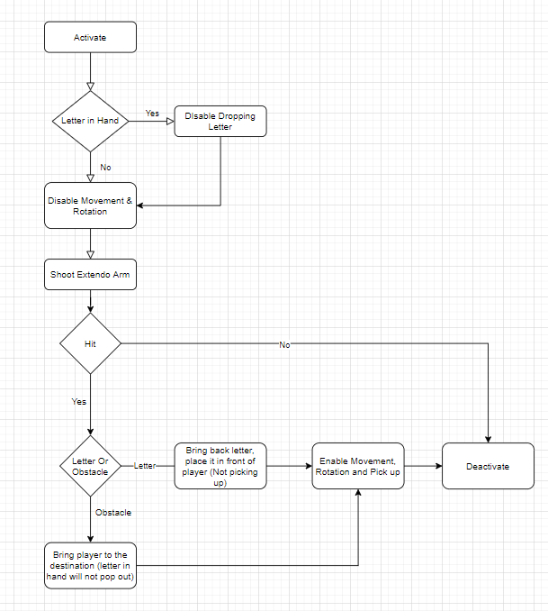This diagram lays out our intended behavior from start to finish.
When the ability is first activated, we start by disabling player movement and rotation to prevent them from interfering with their own intended trajectory. We also prevent them from interacting with letters to prevent unwanted interactions between the ExtendoArm and any currently held letters.
Once the ability has been activated, we cast the arm by enabling its extended animation state.
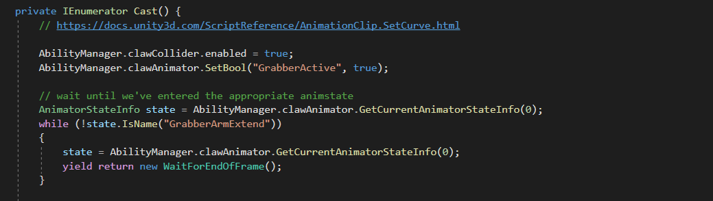After casting, we loop until a collision is detected on the head of the arm, or the ability reaches its full length.
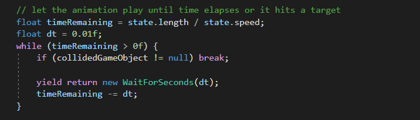If no collision is detected, the ability simply retracts and deactivates, allowing the player to move on and continue playing the game.
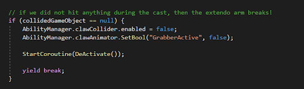 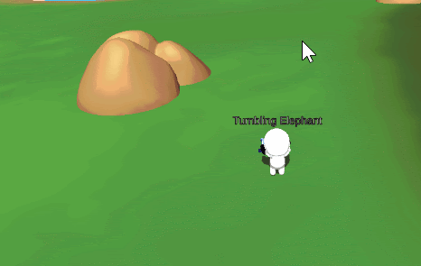However, if a collision is detected on the end of the arm, we collect the collided game object.
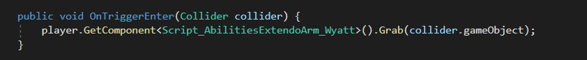If the collidedGameObject is found to be a ‘Collectible’ object such as a letter, we’ll set it as a child of the ExtendoArm, causing it to retract along with the claw. Once the claw is fully retracted, the letter is unparented and allowed to fall to the ground at the player’s feet.
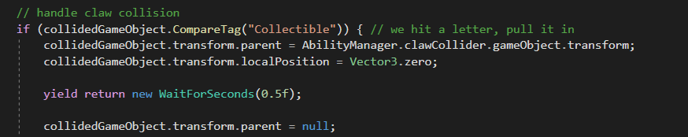Alternatively, when hitting an obstacle in the game world, the ExtendoArm acts as a grappling hook, drawing the player toward the target.
First we set the starting and target positions and disable the player’s built in CharacterController as well as the effect of gravity on the player.
Once the positions are set, we interpolate the player’s position between them.
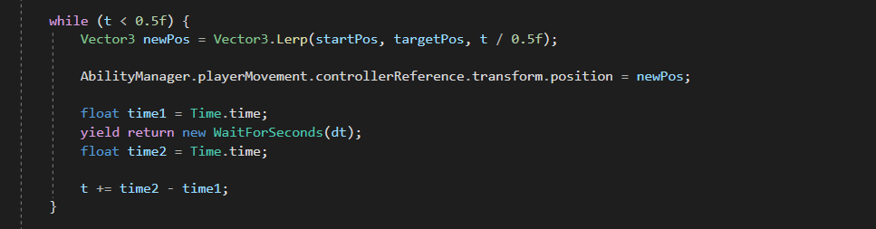 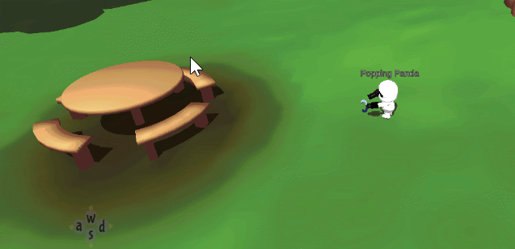With all of the core usage for the ExtendoArm implemented, we restore the player’s CharacterController and gravity, before initiating the final DeActivation sequence.
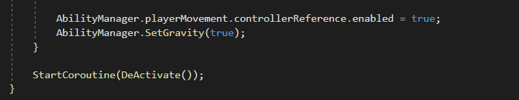Now complete, the ExtendoArm’s deactivation function will be called, restoring standard movement to the player and resetting their ability slot.
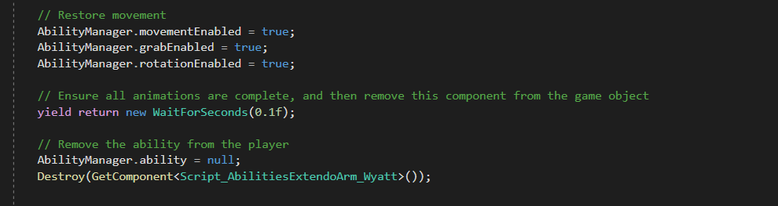With that, we wrap up our discussion on the first iteration of the ExtendoArm ability. Lots of revision will be required to make the ability more intuitive and less punishing when missed, but for a first phase prototype the ability is fun and functional!
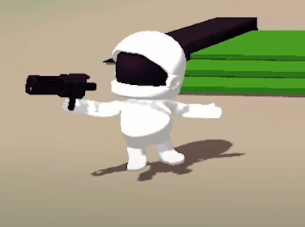